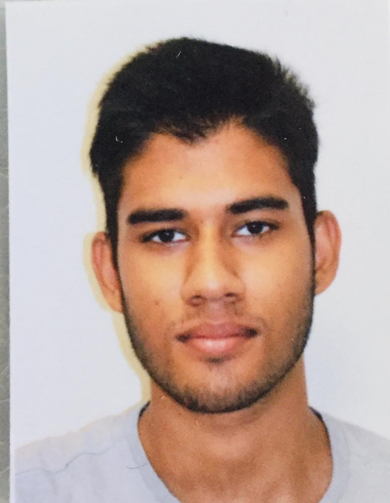

personal details
Indirizzo:
piazza corvetto,1891
20414(MI)
Numero di telefono:
+39-3361561051
Indirizzo email:
seniyathri@gmail.com
Patente di guida:
patente(B)
|
Seniya Thriwanka Hettiarachchige
Sono uno sviluppatore software con solide competenze di risoluzione dei problemi e una comprovata esperienza nella creazione e progettazione di software in un ambiente basato su test.
Educazione
Diploma di scuola superiore, Istituto Tecnico Turistico 'Bertarelli Ferraris' Milano (Giugno 2021)
Edexcel Pearson IGCSE 2017
Work Experience
Lingua
-
INGLESE C1
È il livello avanzato di conoscenza della lingua. Indica la piena autonomia in un paese di madrelingua inglese.
- SPAGNOLO A2
In particolare ottima comprensione del parlato.
- CINGALESE
-Lingua madre
Certificazione
-
British Council Young Learner English language course (Ottobre 2013 - Aprile 2014)
Competenze
Linguaggi di codifica:
- C#, JavaScript, HTML/CSS.
Framework/sistemi:
- bootstrap, Visual Studio.
- operativi (windows 8, windows 10, macOS)
- Browser (Chrome, Firefox, Safari, Edge)
- Microsoft Office (Word, Power Point, Excel)
- Google Drive
Attivita Extracurriculari
- Calcio-Associazione Sportiva Turchino (Via del Turchino, Milano) riconosciuta dal CONI.
- Cricket (anche in Italia, San Donato (MI))
|